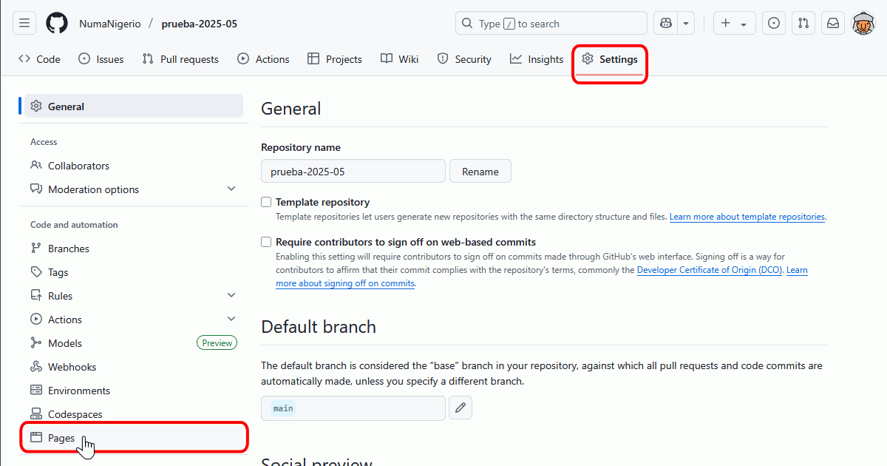
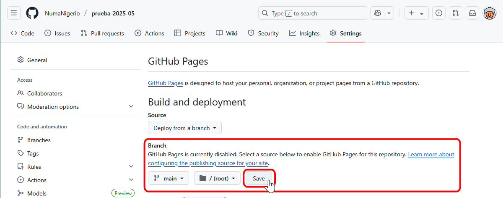
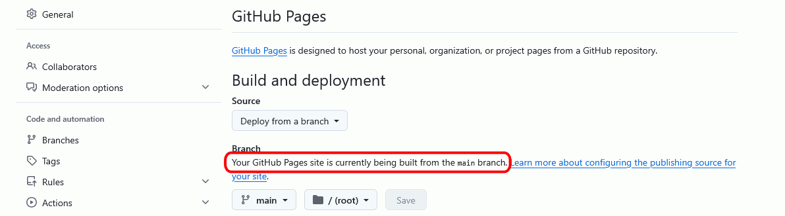

Haga clic en el icono en forma de cruz situado arriba a la derecha y elija la opción "New repository". Si no ha creado todavía ningún repositorio, en la página web se puede mostrar un botón "Start a project", que también permite crear un nuevo repositorio.
Indique el nombre del repositorio, su descripción, si es público o privado. Se recomienda incluir en el repositorio un fichero README, pero no es necesario crear el fichero .gitignore (salvo si se trata de un proyecto de software de uno de los tipos disponibles). Si se trata de un proyecto de software libre, elija la licencia que desee emplear. Haga clic en Create repository:
Inmediatamente se mostrará el repositorio recién creado. En este caso únicamente contiene el fichero Readme.md:
Publicar repositorios web
GitHub Pages es un servicio de GitHub que permite publicar en la web el contenido de un repositorio.
Activar este servicio es muy sencillo:
Si el repositorio contiene únicamente las páginas web que queremos publicar, haga clic en el enlace Settings (configuración):
Casi al final de la página de configuración se encuentra el apartado correspondiente a GitHub Pages. Haga clic en el botón que ahora dice None ...

... cambie a "master branch" ...:
... y haga clic en "Save":
La página se actualizará y le mostrará la URL pública:

En unos segundos la página estará disponible::

Detalles adicionales
El contenido de la web pública es el propio repositorio. Si posteriormente modifica el contenido del repositorio, el sitio web cambiará inmediatamente.
El contenido de la web pública no tiene por qué ser todo el repositorio. Si el repositorio contiene un directorio "docs" y se elige la opción "master/branch /docs folder" en la página Settings, la web pública corresponderá al contenido del directorio "docs".
GitHub pages permite acceder al contenido a través de un dominio propio.
Si el repositorio se llama nombre-de-usuario.github.io, la dirección pública es https://nombre-de-usuario.github.io/
GitHub Pages admite como fuente el generador de sitios estáticos Jekyll.